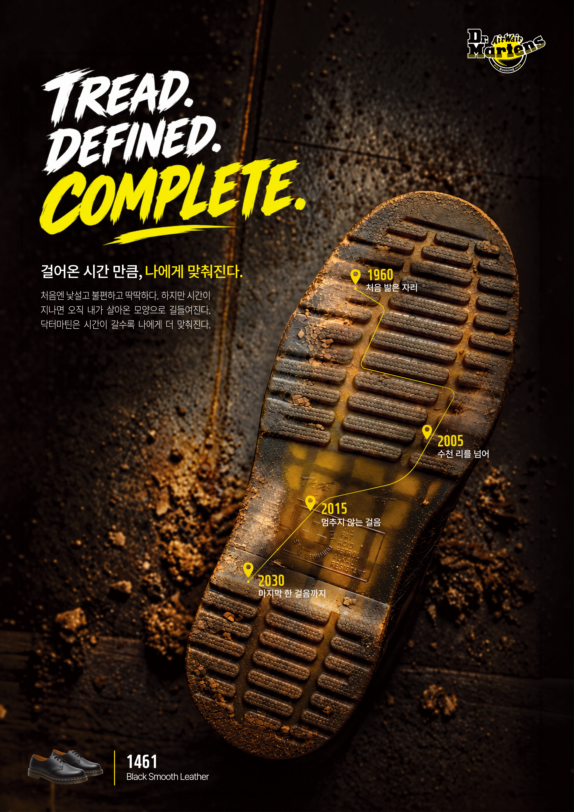
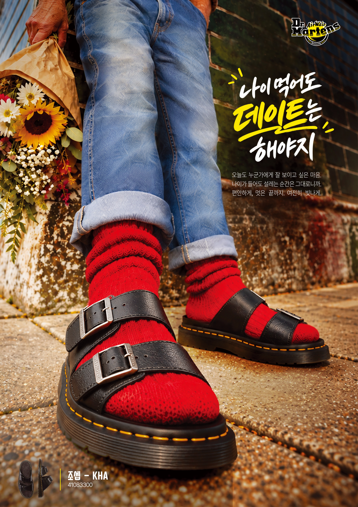

overview
오래 신을수록 사용자의 발과 걸음에 맞춰 길들여지는 특성을 표현한 닥터마틴 광고 시리즈 포스터이다. 밑창에 남은 마모와 흙, 스크래치에 신발과 함께해 온 시간과 경험의 의미를 담았다. 거친 밑창 질감과 연도별 경로 그래픽으로 축적된 경험을 시각화하고 반복된 걸음이 신발을 변화시키는 과정을 보여준다. 특히 닳고 갈라진 밑창의 표면을 강조해 오랜 사용으로 쌓인 흔적이 신발마다 서로 다른 모습으로 남는다는 점을 부각했다. 이를 통해 오래 신은 흔적이 사용자의 개성이 되어, 신발이 점차 자신만의 것으로 완성된다는 메시지를 전한다.

overview
신발에 쌓인 시간의 흔적을 사람의 태도로 확장한 닥터마틴 광고 시리즈 포스터이다. 꽃다발을 든 노년의 인물에게 빨간 양말과 검은 샌들을 매치해 나이가 들어도 데이트를 앞둔 설렘과 멋을 즐기는 모습을 담았다. 기존 노년의 이미지에서 벗어나 대담한 색채와 낮은 시점의 구도로 자신만의 스타일을 드러낸다. 발을 강조한 원근감과 꽃다발의 대비로 새로운 만남을 기대하는 유쾌하고 자유로운 태도를 생생하게 표현했다. 이를 통해 닥터마틴은 세대를 아우르며, 오랜 시간 자기 방식대로 살아가는 사람과 함께하는 신발이라는 메시지를 전한다.